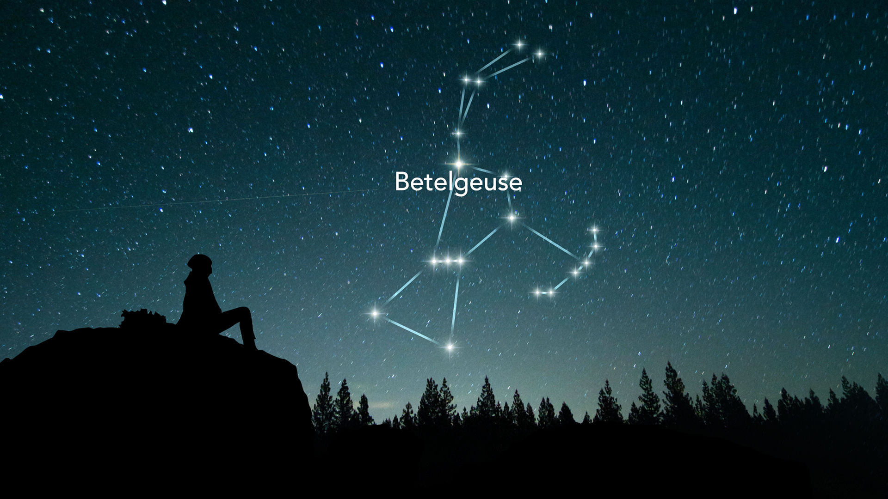
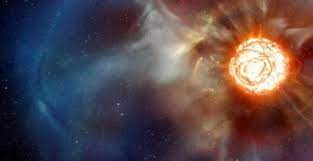
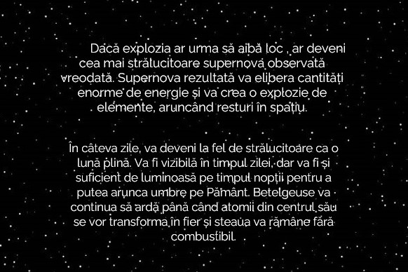
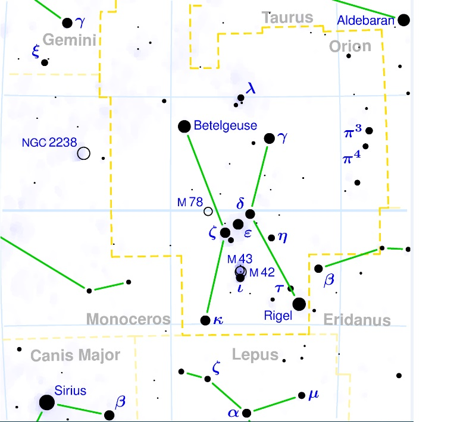
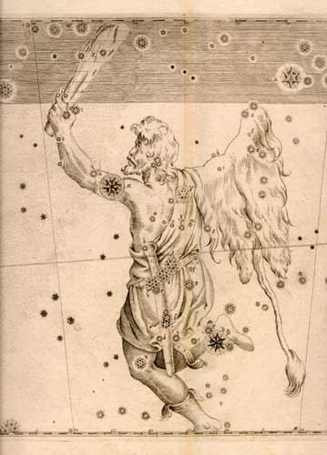

Betelgeuse este a doua stea ca strălucire din constelaţia Orion. Până la sfărăitul lui decembrie 2019, a fost a noua stea ca strălucire de pe bolta cerească. La sfărăitul lui decembrie 2019 este a 33-a cea mai strălucitoare de pe bolta cerească. Au apărut speculaţii că Betelgeuse ar putea fi pe punctul de a deveni o supernovă, deăi astronomii au remarcat că acest lucru nu este de aăteptat să se producă decăt peste aproximativ 100.000 de ani.
Este posibil ca Betelgeuse să explodeze într-o supernovă . Acesta ar fi probabil cel mai spectaculos fenomen astronomic de acest tip şi ar lumina cerul nopţii mai puternic decât o lună plină . Având în vedere mărimea şi vârsta sa de 8,5 millioane de ani, vârstă avansată pentru clasa sa, steaua ar putea exploda în următoarea mie de ani. Deoarece axa sa de rotaţie nu este orientată spre Pă mânt, supernova nu va provoca o explozie de raze gamma suficient de mare în direcţia Pământului pentru a afecta ecosistemul.


| Betegeuse | |
|---|---|
| Date de observatie | |
| Constelatie | Orion |
| Magnitudine aparenta | 0.42 |
| Magnitudine absoluta | -5,14 |
| Clasificare spectrala | M1.5lab |
| Tip de variabila | stea variabila semiregulata |
| Astronomie | |
| Distanta fata de Terra 200 parseci | |
| Orbita | |
| Detalii | |
| Masa | de 15 ori masa Soarelui |
| Raza | de 955 ori raza Soarelui |
| Luminozitate | de 60.000 ori luminozitatea Soarelui |
| Alte denumiri | |
| Constelatie | Orion; Ori |
| Denumire Bayer | & # 945; | Denumire Flamsteed | 58 Ori | Catalogul Bright Star | HR 2061 | Catalogul Henry Draper | HD 39801 | Catalogul SAO | SAO 113271 | Catalogul Hipparcos | HIP 27989 |

In constelatia Orion se regasesc sase stele din cele cinzeci cele mai stralucitoare si una de stele de pe bolta cereasca:
Orion este un vanator urias din mitologia greaca reputat pentru frumusetea si pentru violenta sa. Legenda povesteste ca a fost transformat, dupa moarte, intr-o gramada de stele de catre Zeus, dandu-i numele sau: constelatia Orion. Acesta a fost ucis de sageata lui Artemis. Zeita a fost pacalita de fratele sau , Apolo, si l-a confundat pe Orion cu un scorpion. Cand si-a dat seama de greseala, Artemis s-a rugat lui Zeus, ce i-a asezat imaginea printre stele alaturi de cainele sau, Sirius.

Desen cu celebra constelatie Orion, asa cum si-au imaginat-o oamenii acum sute de ani